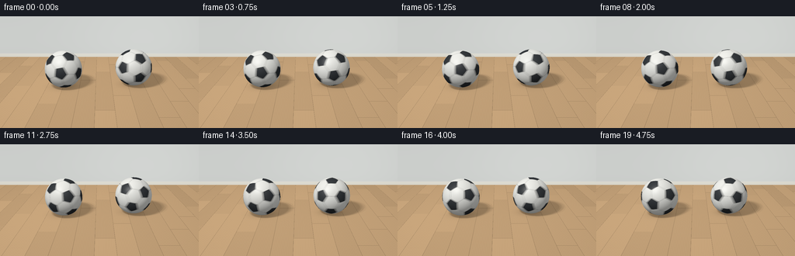
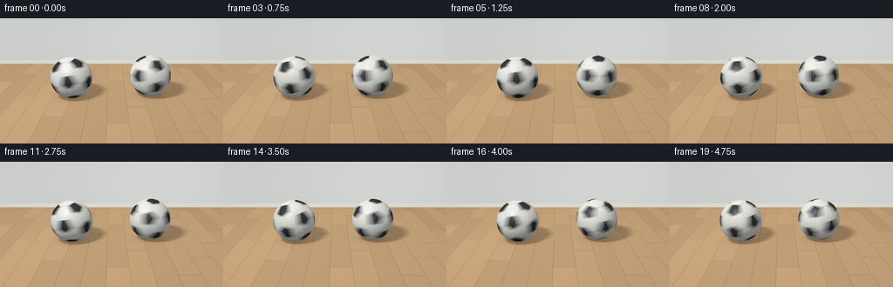
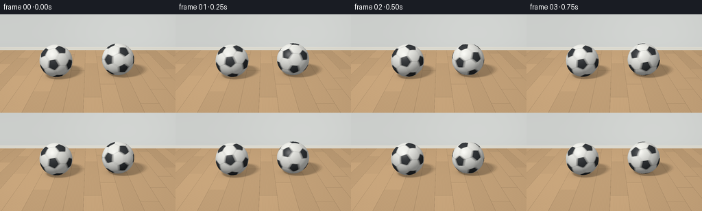
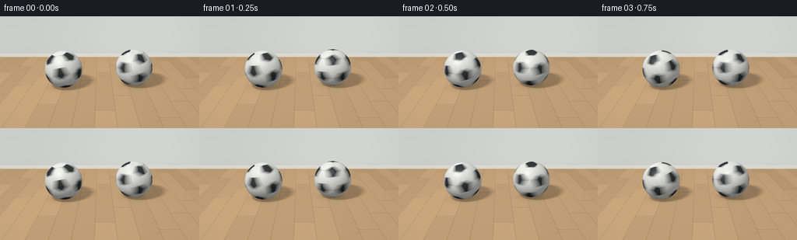

CODING AGENTS AS PIXEL WORLD MODELS
traex/GPT-6.1-Sol · instance_preservation_0027
点击播放 · 原生 RGB 像素
逐轮保存的候选
回放视频、检查图与代码变化。
每份候选均可单独播放。实际图片检查记录在下方工具轨迹中。
候选 01播放与检查图
点击播放 · 原生 RGB 像素

展开代码变化
--- 上一保存版本
+++ 本次保存版本
@@ -0,0 +1,190 @@
+import json
+from pathlib import Path
+import numpy as np
+from PIL import Image
+import artifact_io
+
+ROOT = Path(__file__).resolve().parent
+SPEC = json.loads((ROOT / 'task_spec.json').read_text())
+W,H = SPEC['width'],SPEC['height']
+S=3
+w,h=W*S,H*S
+
+def unit(v):
+ return v / np.linalg.norm(v,axis=-1,keepdims=True)
+
+# A truncated icosahedron supplies the actual 12 pentagons / 20 hexagons.
+phi=(1+np.sqrt(5))/2
+verts=[]
+for a in [-1,1]:
+ for b in [-phi,phi]:
+ verts.extend([[0,a,b],[a,b,0],[b,0,a]])
+v=np.asarray(verts,dtype=float)
+d=np.linalg.norm(v[:,None]-v[None,:],axis=-1)
+edge=(d<2.001)&(d>1.999)
+tri=[]
+for i in range(12):
+ for j in range(i+1,12):
+ for k in range(j+1,12):
+ if edge[i,j] and edge[i,k] and edge[j,k]: tri.append([i,j,k])
+faces=[]; black=[]
+for i in range(12):
+ faces.append(np.array([(2*v[i]+v[j])/3 for j in range(12) if edge[i,j]])); black.append(True)
+for i,j,k in tri:
+ faces.append(np.array([(2*v[a]+v[b])/3 for a,b in [(i,j),(j,i),(j,k),(k,j),(k,i),(i,k)]])); black.append(False)
+fn=unit(np.array([f.mean(axis=0) for f in faces]))
+rad=np.linalg.norm(faces[0][0])
+off=np.array([np.dot(f[0]/rad,n) for f,n in zip(faces,fn)])
+planes=fn/off[:,None]
+black=np.array(black)
+
+camera=np.array([0.,2.55,6.4])
+target=np.array([0.,0.38,0.])
+forward=unit(target-camera)
+right=unit(np.cross(forward,[0,1,0]))
+up=np.cross(right,forward)
+focal=315*S
+xx,yy=np.meshgrid(np.arange(w)+.5,np.arange(h)+.5)
+rays=unit(forward[None,None,:]+((xx-w/2)/focal)[...,None]*right+((h/2-yy)/focal)[...,None]*up)
+flat=rays.reshape(-1,3)
+light=np.array([-3.2,6.5,4.])
+centers=[np.array([-.97,.5,.08]),np.array([.93,.5,-.05])]
+radius=.5
+rng=np.random.default_rng(81)
+
+# Warm oak floor. Grain and joinery are evaluated in world coordinates.
+t_floor=-camera[1]/flat[:,1]
+p=camera+t_floor[:,None]*flat
+fx,fz=p[:,0],p[:,2]
+boardwidth=.45
+bi=np.floor((fx+10)/boardwidth)
+bound=((fx+10)/boardwidth)%1
+zi=np.floor((fz+bi*.79)/2.7)
+end=((fz+bi*.79)/2.7)%1
+seed=np.sin(bi*16.348+zi*71.923)*4375.22
+variation=(seed-np.floor(seed)-.5)
+grain=(np.sin(180*fx+2.2*np.sin(fz*2.5+bi))*.35 + np.sin(370*fx+5*np.sin(fz*.73))* .22 + np.sin(870*fx+3*np.sin(fz*1.8))*.12)
+fine=np.sin(1430*fx+1.3*np.sin(fz*7))*.5
+knots=np.sin(fz*4.3+bi*10.1)
+value=1+variation*.13+grain*.042+fine*.014
+floor=np.array([.59,.385,.205])[None,:]*value[:,None]
+seam=(bound<.009)|(bound>.991)|(end<.0015)|(end>.9985)
+floor[seam]*=.67
+# Quiet natural illumination from the upper left.
+illum=.83+.14*np.exp(-((fx+2)**2+(fz-1.0)**2)/22)
+floor*=illum[:,None]
+base=floor.copy()
+# A plaster wall and narrow painted skirting at the back of the room.
+wall_z=-3.0
+t_wall=(wall_z-camera[2])/flat[:,2]
+wp=camera+flat*t_wall[:,None]
+wall=(t_wall>0)&(wp[:,1]>0)&(t_wall<t_floor)
+wallcol=np.tile([.66,.68,.66],(len(flat),1))
+wallcol*= (.97+.03*np.sin(wp[:,0]*.7))[:,None]
+wallcol*= (1-.045*np.exp(-np.maximum(wp[:,1],0)*3))[:,None]
+base[wall]=wallcol[wall]
+skirt=wall&(wp[:,1]<.14)
+base[skirt]=np.array([.79,.77,.69])*(.88+.04*wp[skirt,1,None]/.14)
+trim=wall&(wp[:,1]>.126)&(wp[:,1]<.142)
+base[trim]*=1.055
+
+def rot_y(a):
+ c,s=np.cos(a),np.sin(a)
+ return np.array([[c,0,s],[0,1,0],[-s,0,c]])
+def rot_x(a):
+ c,s=np.cos(a),np.sin(a)
+ return np.array([[1,0,0],[0,c,-s],[0,s,c]])
+def rot_z(a):
+ c,s=np.cos(a),np.sin(a)
+ return np.array([[c,-s,0],[s,c,0],[0,0,1]])
+
+def sphere_surface(norm, position, rotation, ballno):
+ n=norm@rotation
+ scores=n@planes.T
+ ids=np.argmax(scores,axis=1)
+ best=scores[np.arange(len(n)),ids]
+ scores[np.arange(len(n)),ids]=-10
+ second_ids=np.argmax(scores,axis=1)
+ second=scores[np.arange(len(n)),second_ids]
+ dist=(best-second)/np.linalg.norm(planes[ids]-planes[second_ids],axis=1)
+ groove=np.exp(-(dist/.0063)**2)
+ isblack=black[ids]
+ # Tiny leather grain, deterministic and fixed to the material.
+ pebbles=np.sin(n[:,0]*595+n[:,1]*182)*np.sin(n[:,1]*543+n[:,2]*281)*np.sin(n[:,2]*481+n[:,0]*91)
+ panel_variation=.99+.018*np.sin(ids*13.12)
+ albedo=np.where(isblack[:,None], np.array([.038,.043,.048]),np.array([.855,.857,.815]))
+ albedo*=panel_variation[:,None]*(1+pebbles[:,None]*.018)
+ albedo=albedo*(1-groove[:,None]*.8)+np.array([.032,.033,.031])*groove[:,None]*.8
+ l=unit(light-position)
+ diffuse=np.maximum(0,np.sum(norm*l,axis=1))
+ ambient=.29+.095*norm[:,1]
+ # The ground gently occludes the bottom of the sphere.
+ ambient*=.8+.2*np.clip((norm[:,1]+1)*2,0,1)
+ col=albedo*(ambient+.67*diffuse)[:,None]
+ view=unit(camera-position)
+ half=unit(l+view)
+ spec=np.maximum(0,np.sum(norm*half,axis=1))**55
+ col+=spec[:,None]*np.where(isblack,.12,.095)[:,None]
+ # Broad softbox reflection, not a plastic pinprick.
+ specsoft=np.maximum(0,np.sum(norm*half,axis=1))**10
+ col+=specsoft[:,None]*.026
+ return col
+
+def render(t):
+ cs=[]
+ for i,c in enumerate(centers):
+ cc=c.copy()
+ cc[0]+=.018*np.sin(2*np.pi*.75*t+i*2)
+ cc[2]+=.012*np.cos(2*np.pi*.75*t+i*2)
+ cs.append(cc)
+ image=base.copy()
+ # Area-light soft shadows, cast onto the physical ground plane.
+ floor_visible=~wall
+ shadow=np.zeros(len(p))
+ for c in cs:
+ sh=np.zeros(len(p))
+ for u,vv in [(-.65,-.45),(0,-.45),(.65,-.45),(-.65,.45),(0,.45),(.65,.45),(-.32,0),(.32,0)]:
+ lp=light+np.array([u,0,vv])
+ ld=unit(lp-p)
+ oc=p-c
+ b=np.sum(oc*ld,axis=1)
+ disc=b*b-np.sum(oc*oc,axis=1)+radius**2
+ sh+=((disc>0)&(b<0))/8
+ image[floor_visible]*=(1-.45*sh[floor_visible,None])
+ contact=np.exp(-(((fx-c[0])/.43)**2+((fz-c[2])/.37)**2)*2)
+ image[floor_visible]*=(1-.38*contact[floor_visible,None])
+ # The spherical geometry is exact; only its panel pattern rotates.
+ depth=np.full(len(flat),np.inf)
+ for i,c in enumerate(cs):
+ oc=camera-c
+ b=flat@oc
+ det=b*b-np.dot(oc,oc)+radius**2
+ valid=det>0
+ ids=np.flatnonzero(valid)
+ hit=-b[ids]-np.sqrt(det[ids])
+ visible=hit<depth[ids]
+ ids=ids[visible];hit=hit[visible]
+ position=camera+hit[:,None]*flat[ids]
+ norm=(position-c)/radius
+ samples=[]
+ for offset in [-.007,0,.007]:
+ a=2*np.pi*(1.36 if i==0 else -1.61)*(t+offset)+(0 if i==0 else 1.3)
+ tilt=.18+.03*np.sin(t*3.5+i)
+ rotation=rot_z(tilt)@rot_y(a)@rot_x(.48+i*.22)
+ samples.append(sphere_surface(norm,position,rotation,i))
+ image[ids]=np.mean(samples,axis=0)
+ depth[ids]=hit
+ # Restrained photographic tone curve and camera vignette.
+ image=np.maximum(image,0)
+ vignette=1-.07*((xx-w/2)**2/(w*.7)**2+(yy-h/2)**2/(h*.9)**2)
+ image*=vignette.reshape(-1,1)
+ srgb=np.where(image<=.0031308,12.92*image,1.055*np.power(image,1/2.4)-.055)
+ im=Image.fromarray(np.uint8(np.clip(srgb.reshape(h,w,3)*255,0,255)))
+ return np.asarray(im.resize((W,H),Image.Resampling.LANCZOS))
+
+if __name__=='__main__':
+ frames=[]
+ for f in range(SPEC['frames']):
+ frames.append(render(f/SPEC['fps']))
+ print(f'Frame {f+1}/{SPEC["frames"]}',flush=True)
+ artifact_io.save(np.stack(frames),ROOT)
候选 02播放与检查图
点击播放 · 原生 RGB 像素

展开代码变化
--- 上一保存版本
+++ 本次保存版本
@@ -167,8 +167,8 @@
position=camera+hit[:,None]*flat[ids]
norm=(position-c)/radius
samples=[]
- for offset in [-.007,0,.007]:
- a=2*np.pi*(1.36 if i==0 else -1.61)*(t+offset)+(0 if i==0 else 1.3)
+ for offset in np.linspace(-.025,.025,5):
+ a=2*np.pi*(1.08 if i==0 else -1.29)*(t+offset)+(0 if i==0 else 1.3)
tilt=.18+.03*np.sin(t*3.5+i)
rotation=rot_z(tilt)@rot_y(a)@rot_x(.48+i*.22)
samples.append(sphere_surface(norm,position,rotation,i))
可观测工具轨迹
实际执行的命令与返回图片。
命令 1exit 0
/bin/bash -lc 'ls -la && cat prompt.txt && cat GENERATION_RULES.md && cat task_spec.json'
命令 2exit 0
/bin/bash -lc 'cat artifact_io.py'
命令 3exit 0
/bin/bash -lc "cat > generate.py <<'PY'
import json
from pathlib import Path
import numpy as np
from PIL import Image
import artifact_io
ROOT = Path(__file__).resolve().parent
SPEC = json.loads((ROOT / 'task_spec.json').read_text())
W,H = SPEC['width'],SPEC['height']
S=3
w,h=W*S,H*S
def unit(v):
return v / np.linalg.norm(v,axis=-1,keepdims=True)
# A truncated icosahedron supplies the actual 12 pentagons / 20 hexagons.
phi=(1+np.sqrt(5))/2
verts=[]
for a in [-1,1]:
for b in [-phi,phi]:
verts.extend([[0,a,b],[a,b,0],[b,0,a]])
v=np.asarray(verts,dtype=float)
d=np.linalg.norm(v[:,None]-v[None,:],axis=-1)
edge=(d<2.001)&(d>1.999)
tri=[]
for i in range(12):
for j in range(i+1,12):
for k in range(j+1,12):
if edge[i,j] and edge[i,k] and edge[j,k]: tri.append([i,j,k])
faces=[]; black=[]
for i in range(12):
faces.append(np.array([(2*v[i]+v[j])/3 for j in range(12) if edge[i,j]])); black.append(True)
for i,j,k in tri:
faces.append(np.array([(2*v[a]+v[b])/3 for a,b in [(i,j),(j,i),(j,k),(k,j),(k,i),(i,k)]])); black.append(False)
fn=unit(np.array([f.mean(axis=0) for f in faces]))
rad=np.linalg.norm(faces[0][0])
off=np.array([np.dot(f[0]/rad,n) for f,n in zip(faces,fn)])
planes=fn/off[:,None]
black=np.array(black)
camera=np.array([0.,2.55,6.4])
target=np.array([0.,0.38,0.])
forward=unit(target-camera)
right=unit(np.cross(forward,[0,1,0]))
up=np.cross(right,forward)
focal=315*S
xx,yy=np.meshgrid(np.arange(w)+.5,np.arange(h)+.5)
rays=unit(forward[None,None,:]+((xx-w/2)/focal)[...,None]*right+((h/2-yy)/focal)[...,None]*up)
flat=rays.reshape(-1,3)
light=np.array([-3.2,6.5,4.])
centers=[np.array([-.97,.5,.08]),np.array([.93,.5,-.05])]
radius=.5
rng=np.random.default_rng(81)
# Warm oak floor. Grain and joinery are evaluated in world coordinates.
t_floor=-camera[1]/flat[:,1]
p=camera+t_floor[:,None]*flat
fx,fz=p[:,0],p[:,2]
boardwidth=.45
bi=np.floor((fx+10)/boardwidth)
bound=((fx+10)/boardwidth)%1
zi=np.floor((fz+bi*.79)/2.7)
end=((fz+bi*.79)/2.7)%1
seed=np.sin(bi*16.348+zi*71.923)*4375.22
variation=(seed-np.floor(seed)-.5)
grain=(np.sin(180*fx+2.2*np.sin(fz*2.5+bi))*.35 + np.sin(370*fx+5*np.sin(fz*.73))* .22 + np.sin(870*fx+3*np.sin(fz*1.8))*.12)
fine=np.sin(1430*fx+1.3*np.sin(fz*7))*.5
knots=np.sin(fz*4.3+bi*10.1)
value=1+variation*.13+grain*.042+fine*.014
floor=np.array([.59,.385,.205])[None,:]*value[:,None]
seam=(bound<.009)|(bound>.991)|(end<.0015)|(end>.9985)
floor[seam]*=.67
# Quiet natural illumination from the upper left.
illum=.83+.14*np.exp(-((fx+2)**2+(fz-1.0)**2)/22)
floor*=illum[:,None]
base=floor.copy()
# A plaster wall and narrow painted skirting at the back of the room.
wall_z=-3.0
t_wall=(wall_z-camera[2])/flat[:,2]
wp=camera+flat*t_wall[:,None]
wall=(t_wall>0)&(wp[:,1]>0)&(t_wall<t_floor)
wallcol=np.tile([.66,.68,.66],(len(flat),1))
wallcol*= (.97+.03*np.sin(wp[:,0]*.7))[:,None]
wallcol*= (1-.045*np.exp(-np.maximum(wp[:,1],0)*3))[:,None]
base[wall]=wallcol[wall]
skirt=wall&(wp[:,1]<.14)
base[skirt]=np.array([.79,.77,.69])*(.88+.04*wp[skirt,1,None]/.14)
trim=wall&(wp[:,1]>.126)&(wp[:,1]<.142)
base[trim]*=1.055
def rot_y(a):
c,s=np.cos(a),np.sin(a)
return np.array([[c,0,s],[0,1,0],[-s,0,c]])
def rot_x(a):
c,s=np.cos(a),np.sin(a)
return np.array([[1,0,0],[0,c,-s],[0,s,c]])
def rot_z(a):
c,s=np.cos(a),np.sin(a)
return np.array([[c,-s,0],[s,c,0],[0,0,1]])
def sphere_surface(norm, position, rotation, ballno):
n=norm@rotation
scores=n@planes.T
ids=np.argmax(scores,axis=1)
best=scores[np.arange(len(n)),ids]
scores[np.arange(len(n)),ids]=-10
second_ids=np.argmax(scores,axis=1)
second=scores[np.arange(len(n)),second_ids]
dist=(best-second)/np.linalg.norm(planes[ids]-planes[second_ids],axis=1)
groove=np.exp(-(dist/.0063)**2)
isblack=black[ids]
# Tiny leather grain, deterministic and fixed to the material.
pebbles=np.sin(n[:,0]*595+n[:,1]*182)*np.sin(n[:,1]*543+n[:,2]*281)*np.sin(n[:,2]*481+n[:,0]*91)
panel_variation=.99+.018*np.sin(ids*13.12)
albedo=np.where(isblack[:,None], np.array([.038,.043,.048]),np.array([.855,.857,.815]))
albedo*=panel_variation[:,None]*(1+pebbles[:,None]*.018)
albedo=albedo*(1-groove[:,None]*.8)+np.array([.032,.033,.031])*groove[:,None]*.8
l=unit(light-position)
diffuse=np.maximum(0,np.sum(norm*l,axis=1))
ambient=.29+.095*norm[:,1]
# The ground gently occludes the bottom of the sphere.
ambient*=.8+.2*np.clip((norm[:,1]+1)*2,0,1)
col=albedo*(ambient+.67*diffuse)[:,None]
view=unit(camera-position)
half=unit(l+view)
spec=np.maximum(0,np.sum(norm*half,axis=1))**55
col+=spec[:,None]*np.where(isblack,.12,.095)[:,None]
# Broad softbox reflection, not a plastic pinprick.
specsoft=np.maximum(0,np.sum(norm*half,axis=1))**10
col+=specsoft[:,None]*.026
return col
def render(t):
cs=[]
for i,c in enumerate(centers):
cc=c.copy()
cc[0]+=.018*np.sin(2*np.pi*.75*t+i*2)
cc[2]+=.012*np.cos(2*np.pi*.75*t+i*2)
cs.append(cc)
image=base.copy()
# Area-light soft shadows, cast onto the physical ground plane.
floor_visible=~wall
shadow=np.zeros(len(p))
for c in cs:
sh=np.zeros(len(p))
for u,vv in [(-.65,-.45),(0,-.45),(.65,-.45),(-.65,.45),(0,.45),(.65,.45),(-.32,0),(.32,0)]:
lp=light+np.array([u,0,vv])
ld=unit(lp-p)
oc=p-c
b=np.sum(oc*ld,axis=1)
disc=b*b-np.sum(oc*oc,axis=1)+radius**2
sh+=((disc>0)&(b<0))/8
image[floor_visible]*=(1-.45*sh[floor_visible,None])
contact=np.exp(-(((fx-c[0])/.43)**2+((fz-c[2])/.37)**2)*2)
image[floor_visible]*=(1-.38*contact[floor_visible,None])
# The spherical geometry is exact; only its panel pattern rotates.
depth=np.full(len(flat),np.inf)
for i,c in enumerate(cs):
oc=camera-c
b=flat@oc
det=b*b-np.dot(oc,oc)+radius**2
valid=det>0
ids=np.flatnonzero(valid)
hit=-b[ids]-np.sqrt(det[ids])
visible=hit<depth[ids]
ids=ids[visible];hit=hit[visible]
position=camera+hit[:,None]*flat[ids]
norm=(position-c)/radius
samples=[]
for offset in [-.007,0,.007]:
a=2*np.pi*(1.36 if i==0 else -1.61)*(t+offset)+(0 if i==0 else 1.3)
tilt=.18+.03*np.sin(t*3.5+i)
rotation=rot_z(tilt)@rot_y(a)@rot_x(.48+i*.22)
samples.append(sphere_surface(norm,position,rotation,i))
image[ids]=np.mean(samples,axis=0)
depth[ids]=hit
# Restrained photographic tone curve and camera vignette.
image=np.maximum(image,0)
vignette=1-.07*((xx-w/2)**2/(w*.7)**2+(yy-h/2)**2/(h*.9)**2)
image*=vignette.reshape(-1,1)
srgb=np.where(image<=.0031308,12.92*image,1.055*np.power(image,1/2.4)-.055)
im=Image.fromarray(np.uint8(np.clip(srgb.reshape(h,w,3)*255,0,255)))
return np.asarray(im.resize((W,H),Image.Resampling.LANCZOS))
if __name__=='__main__':
frames=[]
for f in range(SPEC['frames']):
frames.append(render(f/SPEC['fps']))
print(f'Frame {f+1}/{SPEC[\"frames\"]}',flush=True)
artifact_io.save(np.stack(frames),ROOT)
PY
OPENBLAS_NUM_THREADS=1 python generate.py"命令 4exit 0
/bin/bash -lc "python - <<'PY'
p='generate.py'
s=open(p).read().replace('for offset in [-.007,0,.007]:','for offset in np.linspace(-.025,.025,5):').replace('(1.36 if i==0 else -1.61)','(1.08 if i==0 else -1.29)')
open(p,'w').write(s)
PY
OPENBLAS_NUM_THREADS=1 python generate.py"视觉工具实际返回图片 1

视觉工具实际返回图片 2

视觉工具实际返回图片 3

保存候选 2 份；完成命令 4 次；可验证图片返回 3 张。原始 API 响应与完整日志保留在本地。